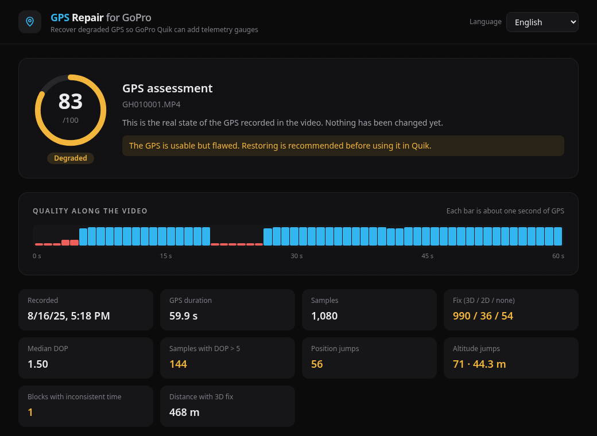
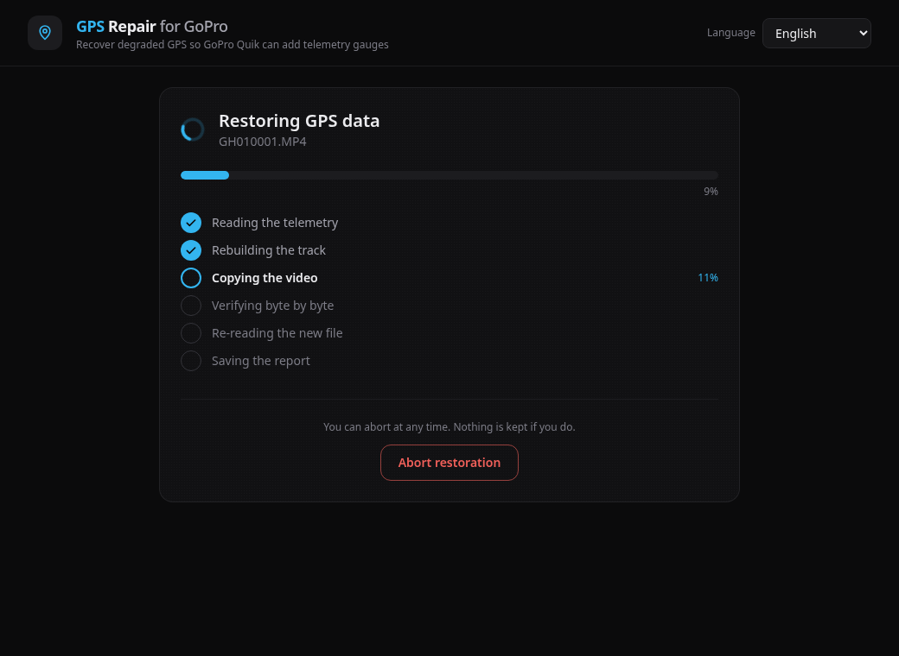
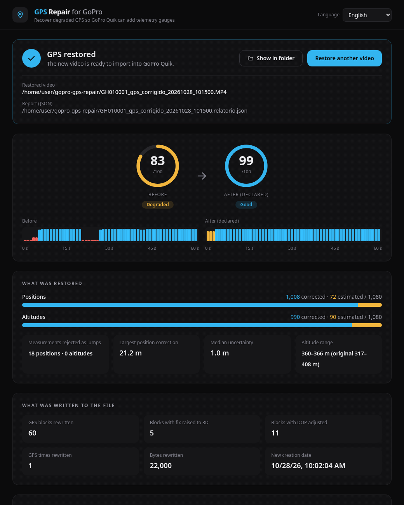

Para câmeras GoPro HERO5 a HERO10
Recupere o GPS dos seus vídeos GoPro
Quando o GPS da câmera falha durante a gravação, o GoPro Quik não adiciona os medidores de telemetria (mapa, velocidade, altitude) ou mostra dados errados. Este app corrige os dados de GPS do vídeo e grava uma cópia nova. O arquivo original não é alterado.
Causas
Por que o GPS da GoPro falha
O receptor de GPS da GoPro é pequeno, e a antena fica no topo da câmera. O sinal dos satélites já chega fraco, e qualquer coisa entre a antena e o céu piora a recepção. As causas mais comuns:
Obstáculos
Árvores, prédios, paredões de pedra, pontes e túneis bloqueiam o sinal.
Reflexos
Perto de prédios, rochas, água ou metal, o sinal chega refletido e a posição calculada sai errada.
Chuva e céu fechado
Chuva, nuvens carregadas e folhas molhadas enfraquecem ainda mais um sinal que já é fraco.
Posição da câmera
De cabeça para baixo, de lado ou no peito, a antena fica virada para baixo ou coberta pelo corpo ou pelo capacete.
Caixas e suportes
Caixas de proteção, frames de metal, Media Mod e acessórios encostados no topo da câmera cobrem a antena.
Gravação rápida
No QuikCapture, um clique liga a câmera e já começa a gravar, antes de o GPS achar os satélites. O sinal pode levar de segundos a minutos para aparecer.
Câmera parada há tempo
Depois de semanas desligada, ou levada para longe, a câmera procura os satélites do zero, e o primeiro sinal demora mais.
Ligar em movimento
Ligada já em movimento e sob árvores, a câmera pode demorar muito para achar o sinal, ou nem achar.
Dica: ligue a câmera num lugar aberto e espere o ícone de GPS aparecer na tela antes de começar a gravar.
O app nasceu desse problema: vídeos de trilhas de mountain bike sob árvores, gravados com uma HERO7 Black, em que o Quik não aceitava a telemetria.
Efeitos
O que a falha causa no vídeo
O GPS com falhas fica gravado dentro do MP4. O problema aparece quando você abre o vídeo no Quik ou em outro programa de telemetria:
- Medidores bloqueados: o Quik não oferece os medidores ou mostra um aviso sobre o GPS (como "GPS Only").
- Velocidade errada: picos que não batem com o trajeto, ou velocidade zero com a bicicleta andando.
- Saltos de posição: o trajeto no mapa faz zigue-zague e pontas.
- Trechos perdidos: linhas retas ligando pontos distantes.
- Início sem posição: os primeiros segundos, ou minutos, ficam sem GPS.
- Altitude oscilando: subidas e descidas que não existiram.
- Distância errada: o total percorrido não confere.
O que o app faz
Avalia, corrige e mostra o que fez
Escolha o vídeo ou arraste o MP4 para a janela. O app avalia o GPS, você decide se quer corrigir e, no fim, recebe um relatório.
Avalia o GPS
Mostra uma nota de 0 a 100, a qualidade segundo a segundo e os problemas encontrados: trechos sem sinal e saltos de posição e de altitude. Nada é alterado nesta etapa.

Corrige e grava uma cópia
Descarta as posições que saltam, suaviza o trajeto usando a posição e a velocidade medidas pela câmera (filtro de Kalman) e preenche os trechos sem sinal. O vídeo novo vai para a pasta gopro-gps-repair, na sua pasta pessoal. Dá para cancelar a qualquer momento.

Mostra o relatório
Informa quantas posições e altitudes foram corrigidas (havia medição) ou estimadas (não havia), e quantas medições foram descartadas. Depois, é só abrir o vídeo novo no Quik.

O original não muda
O app grava um vídeo novo. O arquivo original fica como estava.
Só o GPS muda
Vídeo, áudio e os outros dados da GoPro ficam idênticos. O app confere byte a byte e não recomprime o vídeo.
Testado no Quik
Depois da correção, o Quik leu o GPS do vídeo novo e adicionou mapa, velocidade e altitude.
Limites
- O app não descobre o caminho real. Em trechos longos sem sinal, ele liga as pontas de forma suave e marca esses pontos como estimados.
- Se o GPS estava desligado ou nunca achou satélites, não há o que corrigir.
- Para o Quik aceitar o trajeto, o vídeo novo informa sinal 3D e boa precisão. Os valores são reconstruídos, não medidos: guarde o original e o relatório.
- Funciona com as câmeras HERO5 a HERO10. A HERO11 e as mais novas ainda não são compatíveis.
Baixar
Escolha o seu sistema
Todos os pacotes trazem o app com janela e a linha de comando.
Instalador recomendado
Windows 10 ou 11, 64 bits. Cria atalho no menu Iniciar.
Versão portátil (.exe)
Um único arquivo, sem instalação. Bom para pendrive.
Aviso do SmartScreen: o app ainda não tem assinatura digital, então o Windows pode mostrar "O Windows protegeu o computador". Clique em Mais informações e depois em Executar assim mesmo.
App para macOS recomendado
Universal: Macs com Apple Silicon (M1, M2...) e com Intel. Descompacte e arraste o app para a pasta Aplicativos.
Primeira abertura: o app ainda não tem assinatura da Apple. Clique nele com o botão direito e escolha Abrir. Se o macOS bloquear mesmo assim, vá em Ajustes do Sistema → Privacidade e Segurança e clique em Abrir Mesmo Assim.
.deb
Ubuntu 24.04+, Debian 13+, Linux Mint, Pop!_OS e derivados.
sudo apt install ./gopro-gps-repair_*_amd64.debArch Linux
Arch, Manjaro, EndeavourOS e derivados.
sudo pacman -U ./gopro-gps-repair-*-x86_64.pkg.tar.zstFlatpak
Qualquer distro com Flatpak. O runtime do GNOME é baixado na instalação.
flatpak install --user ./gopro-gps-repair.flatpakAppImage
Qualquer distro, sem instalar. É só dar permissão de execução e abrir.
chmod +x gopro-gps-repair-gui-x86_64.AppImage && ./gopro-gps-repair-gui-x86_64.AppImageSnap
Ubuntu e distros com snapd. O pacote ainda não está na Snap Store, por isso a opção --dangerous.
sudo snap install --dangerous ./gopro-gps-repair_*_amd64.snapArquitetura: os pacotes de Linux são para PCs de 64 bits (x86_64). Rode o comando na pasta onde o arquivo foi baixado.
Versões anteriores e notas de cada versão: página de Releases no GitHub.